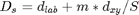
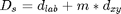

SLICSUPERPIX - Simple Linear Iterative Clustering.
Contents
Description
Implement the SLIC (Simple Linear Iterative Clustering) superpixel segmentation of [ASSLFS10,LSALF10]. The SLIC approach clusters pixels in the combined five-dimensional color and image plane space.
See also software [SLIC].
Syntax
Q = SLICSUPERPIX(I); [Q, Ck, ColCk] = SLICSUPERPIX(I, S); [Q, Ck, ColCk] = SLICSUPERPIX(I, S, 'Property', propertyvalue, ... );
Inputs
I : input color image of size (X,Y,C) (multispectral with C=3 bands).
S : (optional) variable setting the scale of the superpixel segmentation; when S>=1, it represents an upper bound for the desired number of clusters, ie. the approximate number of approximately equally-sized superpixels (and the approximate size of each superpixel is (X*Y)/S pixels); when 0<S<1, it represents the size of the superpixel as a proportion of the size of the input image, ie. the superpixels will have a size of approximately (min(X,Y)*S)^2 pixels; default: S=0.05, ie. if the input image is of size (100,100), the superpixel segments are expected to have a size of approximately 25 pixels.
Property [propertyname propertyvalues]
'T' : (optional) stopping criterion; it is defined as a threshold on the errror for relocating all the superpixel regions' centers; default: T=eps.
'n' : (optional) multiplying factor used for the search area around each superpixel region's center; default: n=2.
'm' : (optional) scalar; the greater this value, the more spatial proximity is emphasized in the calculation of distances and the more compact the clusters are; this value can be >=0; we did however replace the original expression Eq.(1):  with a simpler one:  as it is easier to control the compactness of the clusters this way (using m only); default: m=1.
'k' : (optional) size of the neighbourood considered when correcting the location of the superpixel regions' centers; when set to 0, the first initial initialization is kept as it is; default: k=3.
'iter' : (optional) maximum number of iterations; default: iter=Inf, ie. the segmentation process is iterated till convergence.
'lab' : (optional) boolean flag set to true for transforming, prior to the processing, a 3D image (assumed to be RGB) into the Lab color space; default: lab=true.
Outputs
Q : diagram of superpixels regions; it takes values in the range [1,K] where K is the final number of superpixel regions; it is a matrix of size (X,Y).
Ck : coordinates of the centers of the corresponding superpixels; it is a matrix of size (K,2).
ColCk : representative values of the superpixels; it is a matrix of size (K,3), whose values are in Lab space if the flag lab (see above) is set to true.
Example
I = imread('autumn.tif');
L = SLICSUPERPIX(I, 20, 'disp', true);
[Q, Ck, ColCk] = SLICSUPERPIX(I, 0.05, 'T', eps, 'n', 2, 'm', 10, 'k', 3, 'i', Inf); % default
References
[ASSLFS10] R. Achanta, A. Shaji, K. Smith, A. Lucchi, P. Fua and S. Susstrunk: "SLIC superpixels", EPFL Technical Report no. 149300, 2010. http://infoscience.epfl.ch/record/149300/files/SLIC_Superpixels_TR_2.pdf
[LSALF10] A. Lucchi, K. Smith, R. Achanta, V. Lepetit and P. Fua: "A fully automated approach to segmentation of irregularly shaped cellular structures in EM images", Proc. MICCAI, 2010. http://cvlab.epfl.ch/publications/publications/2010/LucchiSALF10.pdf
[SLIC] executable available at: http://ivrg.epfl.ch/supplementary_material/RK_SLICSuperpixels/index.html.
See also
Related: SLICSUPERPIX, GEOSUPERPIX, AMOEBASUPERPIX. Called: SLICSUPERPIX_BASE.
Function implementation
function [Q, varargout] = slicsuperpix(I, varargin)
parsing parameters
error(nargchk(1, 22, nargin, 'struct')); error(nargoutchk(0, 3, nargout, 'struct')); % mandatory parameter if ~isnumeric(I) error('slicsuperpix:inputerror','a matrix is required in input'); end p = createParser('SLICSUPERPIX'); % create an instance of the inputParser class. % optional parameter p.addOptional('S', 0.05, @(x)isscalar(x) && ((x>0 && x<1) || (x>1 && x==round(x)))); % additional optional parameters p.addParamValue('m', 1, @(x)isscalar(x) && x>=0); p.addParamValue('T', eps, @(x) isscalar(x) && x>=0); p.addParamValue('n', 2, @(x)isscalar(x) && x>=1 && x==round(x)); p.addParamValue('k', 3, @(x)isscalar(x) && (x==0 || x>=3)); p.addParamValue('iter', Inf, @(x)isscalar(x) && x>=1); p.addParamValue('lab', true, @islogical); % parse and validate all input arguments p.parse(varargin{:}); p = getvarParser(p);
setting variables
C = size(I,3); if C~=3 warning('slicsuperpix_base:inputwarning', ... 'RGB/Lab image required in input - input image is converted'); if C==1, I = repmat(I, [1 1 3]); else I = I(:,:,1:3); end end if p.S<1 % p.S = p.S * min(size(I,1),size(I,2)); p.S = numel(I(:,:,1)) ./ (p.S * min(size(I,1),size(I,2)))^2; end if nargout==0, p.disp = true; end;
main calculation
[Q, Ck, ColCk] = slicsuperpix_base(I, p.S, p.lab, p.T, p.n, p.m, p.k, p.iter); %[Q, Ck, ColCk] = slicsuperpix_base2(I, p.S, p.lab, p.T, p.n, p.m, p.k, p.iter); if any(~Q(:)) i = find(~Q); warning('slicsuperpix:outputwarning', ... ['not all pixels reached by the classifier - ' ... 'increase the range of the exploration domain (''n'') ' ... 'or, when possible, the number of iterations (''i'')']); Q(i) = 1; end if nargout>=2 varargout{1} = Ck; if nargout>=3, varargout{2} = ColCk; end end
display
if p.disp figure; if isempty(ver('images')) subplot(1,2,1), imagesc(rescale(I)); subplot(1,2,2), imagesc(Q), colormap jet; else M = (imdilate(Q,ones(3,3))-Q==0); % subplot(1,2,2), imagesc(label2rgb(Q.*M)), axis image off; subplot(1,2,2), imagesc(label2rgb(Q)), axis image off; M = cat(3,M,M,M); subplot(1,2,1), imagesc(rescale(I.*M)+(1-M)), axis image off; end suptitle('SLIC superpixel regions'); figure; subplot(1,2,1), imagesc(rescale(I)), axis image off; if p.lab, rgb = Lab2RGB(ColCk(:,1),ColCk(:,2),ColCk(:,3)); % convert back else rgb = cat(3,ColCk(:,1),ColCk(:,2),ColCk(:,3)); end % rgb(size(rgb,1)+1,1,:) = [0 0 0]; Q(Q==0) = size(rgb,1); rgb = double(reshape(rgb(Q(:),:), size(I))); if exist('i','var'), rgb([i; i+numel(Q); i+2*numel(Q)]) = 0; end subplot(1,2,2), imagesc(rescale(rgb)), axis image off; suptitle('SLIC superpixel approximation'); end
end % end of slicsuperpix